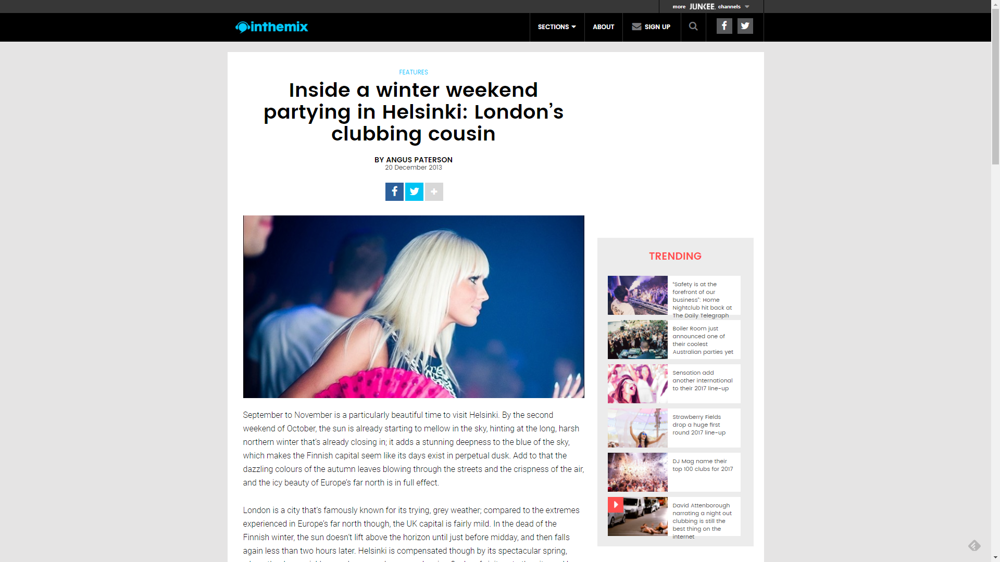

Inside a Winter Weekend Partying in Helsinki: London’s Clubbing Cousin
{kind=link}

Photograph no longer available
September to November is a particularly beautiful time to visit Helsinki. By the second weekend of October, the sun is already starting to mellow in the sky, hinting at the long, harsh northern winter that’s already closing in; it adds a stunning deepness to the blue of the sky, which makes the Finnish capital seem like its days exist in perpetual dusk. Add to that the dazzling colours of the autumn leaves blowing through the streets and the crispness of the air, and the icy beauty of Europe’s far north is in full effect.
London is a city that’s famously known for its trying, grey weather; compared to the extremes experienced in Europe’s far north though, the UK capital is fairly mild. In the dead of the Finnish winter, the sun doesn’t lift above the horizon until just before midday, and then falls again less than two hours later. Helsinki is compensated though by its spectacular spring, where the days quickly grow longer and warmer, drawing flocks of visitors to the city, and by the middle of summer it’s flooded with sunshine, staying light for as long as 20 hours a day.
Photograph no longer available
The spring and summer are undoubtedly the best times for a clubber to visit Helsinki, when there’s a glut of the summery outdoor dance festivals to choose from, working from the multi-stage, multi-genre template established by the Global Gathering brand just outside of London back in 2001.
The city slides into spring with Waterland, a party in Europe’s biggest indoor waterpark that has thousands in the pool going bonkers at any one time. Summer Sound Festival, in the final sunny weekend of July, is the biggest dance festival in northern Europe, this year featuring a massive line-up of trance favourites like Above & Beyond, Gareth Emery and Markus Schulz, plus a heavy selection of EDM headliners like Hardwell, Axwell, Knife Party and beyond. Meanwhile, the Flow Festival takes place over five days in August, this year hosting a mix of marquee electronic acts like The Knife and Kraftwerk, with underground DJ staples like Tensnake, Maya Jane Coles and Todd Terje also performing.
By the second weekend of October, though, the majority of the clubbing action in Helsinki takes place within the city’s clubs. Many of them are conveniently located around the city “Centrum” and the sprawling Senate Square. When inthemix visited for a weekend, lovers of underground house and techno in Helsinki were indulged on the Friday night by Joris Voorn playing an extended set to a packed house at Tivoli, while on the Saturday, it was a show at Circus right on the square showcasing Finnish talent.
Waterland Serena, Finland Saturday March 8, 2014 Website.
Summer Sound Festival Messukeskus, Finland July 2014 Website.
Tivoli Fredrikinkatu 51, 00100 Helsinki Website.
Photograph no longer available
Helsinki’s taste for trance
Anybody looking for a taste of London’s house and techno scene a little further up north will find plenty to enjoy in Helsinki if they go digging. This year even saw the launch of Room Service, a Finnish iteration of the notorious Boiler Room live stream: invite-only events that take place at secret locations, streamed to the world via YouTube. The venture puts the focus on the edgier side of Finnish clubbing talent, as well as a choice selection of visitors from throughout Europe.
There’s even an undercurrent of UK bass to be found in Helsinki; Rico Tubbs is the biggest bass artist to emerge out of the country, while post-dubstep artist Teeth regularly travels south to play at London institutions like Fabric.
However, Saturday night taps into the strength of the Finnish trance scene, mirroring London’s own enduring trance community; seen in full force in late October at Above & Beyond’s 10,000 strong Group Therapy show at the Alexandra Palace, which was simulcast to an audience of tens of millions around the world. Above & Beyond are based in London where they run their Anjunabeats and Anjunadeep labels; though trio member Paavo Siljamäki originally hails from Finland, and he’s part of a crew of the country’s trance heavies that also includes veterans Darude and Orkidea, newcomers like Tom Fall and Armada signing Maison & Dragen, as well as Anjuabeats longtimers Super8 & Tab AKA Miika Eloranta and Janne Mansnerus.
Both Eloranta and Mansnerus have nearly 20 years of history in the Helsinki scene, releasing music under their own solo aliases (they’re also the duo behind Finland’s landmark Empire parties, focusing on an all-star local cast); Eloranta even worked with A&B’s Siljamäki early in the millennium under the Aalto pseudonym. However, in 2006 the pair joined forces as Super8 & Tab, the partnership solidified by the success of their smash single Helsinki Scorching; one of the templates for the ‘nu-trance’ sound that in successive years that saw the genre evolve with heavy elements of house, progressive and a healthy tendency towards the groove.
Photograph no longer available
Firing up at Circus
Circus is one of Helsinki’s larger clubs, with a stage that means it doubles as a venue for live gigs, and a main dancefloor big enough to hold 1,000 people. On the night inthemix visits, Super8 & Tab bring the trancier side of big-room house to the main room, while a host of Helsinki regulars settle into a house and techno groove in the back room.
One of the first DJs for the mainroom is DJ Orion, otherwise known as Juska Wendland, one of the long-term inhabitants of the Helsinki scene and a prominent chillout producer. As a DJ, though, his current focus is house and techno, which makes him an ideal candidate to warm up the main room. He takes a similar approach to Guy J’s heralded set at Group Therapy in London a few weeks later; deeper house grooves, with a nod to trance via some melodic progressive; he brings it to a close appropriately with a new bootleg of Sasha’s Xpander.
Meanwhile in the back room, Antti Rasi is holding it down, another of Helsinki’s veteran names and a consistent presence in underground house and techno. Having recently returned from several years of living and immersing himself in the Berlin scene, he’s slotted easily back into his city’s underground scene. Beyond missing that city’s self-regulation when it comes to club operating hours, Rasi says he had plenty of reasons to come home.
“Berlin is a unique place, so it’s hard to compare anything to it really; but there’s no doubt Helsinki definitely has a lively scene too. Not a weekend goes by without a host of high-quality parties, with both foreign guests and local heroes.”
Circus Salomonkatu 1-3, 00100 Helsinki 010 423 3231 Website.
Photograph no longer available
About as Finnish as ‘myötähäpeä’
For anyone wanting to understand the Finnish mentality, they share a lot in common with much of northern Europe: Scandinavia, Germany, the Netherlands and beyond. Though its people might be more reserved, they’re also more sincere and genuine in the way they relate. A sizable contingent of Helsinki’s dance scene (modestly sized as it is) was present at Empire the night inthemix visited, from across the different corners of EDM, trance, house and techno; there’s a genuine camaraderie among them, and it’s a city that’s welcoming to outsiders too.
It was less than a century ago that Finland broke away from Russia to establish its independence, and that continues to shape its identity today. There’s a quirky, though definitive phenomenon deep in the culture known as “myötähäpeä” – defined loosely as the never-ending national Finnish feeling of cringing embarrassment; the desire to slink away into the shadows.
To a degree, Finland might have felt like a wallflower alongside the icy-cool confidence of its Swedish cousins; a country responsible for bombastic personalities like Avicii, Prydz and the Swedish House Mafia, or steely icons of the techno scene like Adam Beyer, Cari Lekebusch and Joel Mull. But while Finland might lack the confidence to take its scene to the world, their current united front means this is changing. And there’s one factor working in their favour: the Helsinki clubbing scene is strong enough to speak for itself.
Photos by Timo Torvikoski.